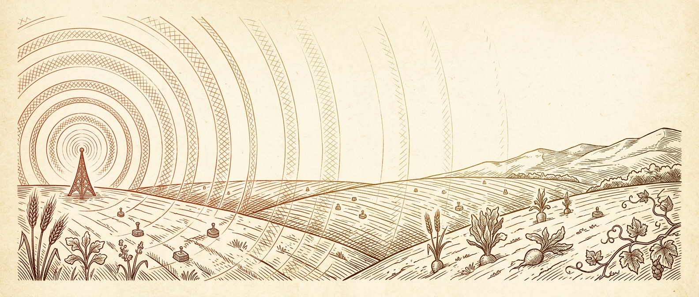
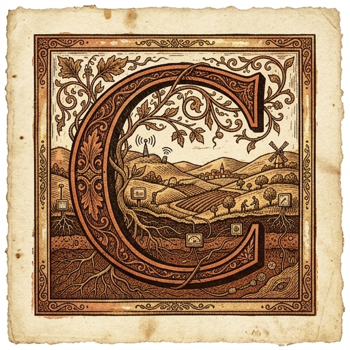
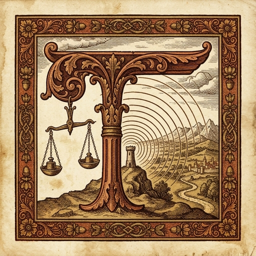
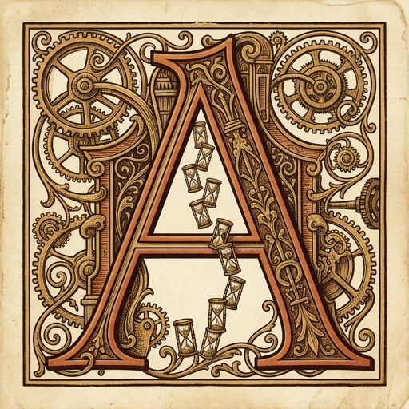
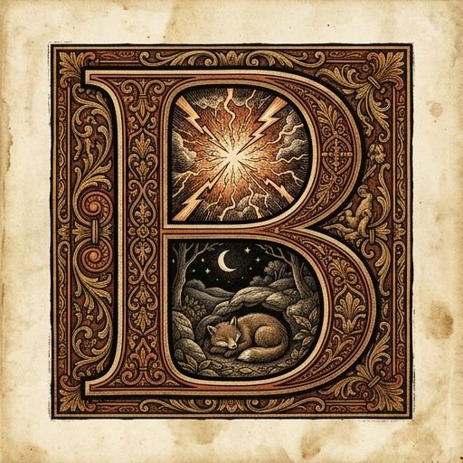
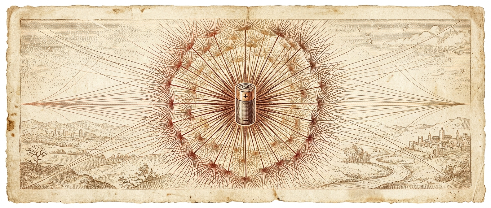

onsider the predicament of a small device buried in a field, miles from the nearest tower, powered by nothing more than a coin cell battery the size of a nickel. It must speak — must send its readings of soil moisture or temperature or tilt — across kilometres of open air, through walls of noise, on a power budget so meagre that each transmission is an act of careful thrift. This is the world of LoRa, and its central engineering decision is not what to say, but how slowly to say it.
The name itself is a clue. LoRa stands for Long Range, and long range, in the physics of radio, is purchased not with louder transmissions but with more patient ones. The technology that makes this possible is a modulation scheme with an evocative name: Chirp Spread Spectrum. To understand the tradeoffs of LoRa is to understand why patience — in the form of a single tuneable parameter called the Spreading Factor — is the currency in which range, speed, and battery life are denominated.
n the lexicon of radio engineering, a chirp is a signal whose frequency sweeps smoothly from low to high over a fixed interval — imagine a bird’s ascending call rendered in electromagnetic waves. Every piece of data in LoRa is encoded not as a fixed tone but as a pattern of these rising sweeps across the available bandwidth. The Spreading Factor, numbered seven through twelve, determines how many chirps compose each symbol of data. At SF7, a symbol consists of 128 chirps and passes quickly. At SF12, the same symbol requires 4,096 chirps — thirty-two times as many — and takes proportionally longer to transmit.
The analogy that clarifies this best is acoustic. Imagine trying to hear someone whisper in a noisy room. If they say one quick word, you might miss it. If they stretch that same word out over thirty-two times longer, repeating the same acoustic pattern slowly, your brain has much more time to accumulate evidence of the pattern and filter out the noise. The message content is identical — you have merely given yourself more integration time to be sure of what you heard. This is precisely what a higher spreading factor accomplishes in the radio domain.

he fundamental bargain of spreading factor is this: every step upward doubles the time each symbol occupies the air, which halves the data rate, but adds approximately 2.5 decibels of processing gain to the receiver’s sensitivity. The signal does not travel farther — radio waves are indifferent to our encoding choices — but the receiver can now decode a much weaker copy of it. Range, in other words, is not a property of the transmitter’s power but of the receiver’s patience.
The numbers are stark. At SF7, a LoRa radio achieves 5,470 bits per second and can carry payloads of up to 250 bytes. At SF10, the rate falls to 980 bits per second, and the maximum payload shrinks to just 19 bytes. In the US 902–928 MHz band, these correspond to data rates DR3 and DR0 respectively at 125 kHz bandwidth. At 500 kHz bandwidth, the full range of SF7 through SF12 is available, with SF7 reaching 21,900 bits per second — fast by LoRa standards, though glacial by the standards of WiFi or cellular.
The time on air — literally how long the radio waves occupy the channel for a single message — follows this same exponential curve. A ten-byte payload at SF7 spends roughly 39 milliseconds on the air. The same payload at SF12 requires 991 milliseconds — nearly a full second. Each step up in spreading factor approximately doubles the duration, because each symbol now contains twice as many chirps, each of which must be transmitted in sequence.

single LoRaWAN transmission is not merely the act of sending. It is an elaborate choreography of eleven distinct states, each with its own current draw and duration, measured with precision by Casals and colleagues on a Multitech mDot platform carrying a Semtech SX1272 transceiver. The radio must wake, prepare itself, transmit, wait for two receive windows in which the gateway might respond, shut down its radio, perform housekeeping, and return to sleep. The entire sequence, even at SF7, consumes roughly two and a half seconds of active time.
The receive windows deserve particular attention. RX1 opens exactly one second after transmission ends; RX2 opens one second after that. During these brief intervals, the device listens for a downlink — an acknowledgement, a configuration change, a command from the network. If nothing is heard, the windows close and the radio powers down. These windows are mandatory in the LoRaWAN protocol, and their current draw — 38.1 mA for RX1, 35.0 mA for RX2 — is not negligible.
But it is the transmit phase itself that dominates. At 83 milliamps, transmission draws more current than any other state, and its duration is the one that scales directly with spreading factor. This is the lever that the engineer pulls when choosing an SF: a longer transmit phase means more energy per message, but also a message that can be heard from farther away.
| 1 | // The inner life of a LoRa radio module. |
| 2 | // Eleven states, each a different metabolic rate, |
| 3 | // written from the perspective of the transceiver itself. |
| 4 | |
| 5 | // the engineer decides how slowly we speak |
| 6 | let spreading_factor = engineer.choose(7, 12) |
| 7 | |
| 8 | // wake from near-death to draw breath |
| 9 | draw(22.1, "mA", 168, "ms") |
| 10 | |
| 11 | // warm the oscillator, tune the antenna |
| 12 | draw(13.3, "mA", 84, "ms") |
| 13 | |
| 14 | // now speak — the longest, hungriest moment |
| 15 | draw(83.0, "mA", time_on_air(spreading_factor)) |
| 16 | |
| 17 | // wait one second, then listen for a reply |
| 18 | draw(27.0, "mA", 983, "ms") |
| 19 | draw(38.1, "mA", 100, "ms") |
| 20 | |
| 21 | // silence. listen once more, then give up. |
| 22 | draw(27.1, "mA", 500, "ms") |
| 23 | draw(35.0, "mA", 33, "ms") |
| 24 | |
| 25 | // power down, tidy the registers, go dark |
| 26 | draw(13.2, "mA", 147, "ms") |
| 27 | draw(21.0, "mA", 268, "ms") |
| 28 | draw(13.3, "mA", 39, "ms") |
| 29 | |
| 30 | // return to the long stillness |
| 31 | draw(0.045, "mA", until_next_wake()) |

etween transmissions, the radio sleeps — and in that sleep, the mathematics of survival are determined. The SX1272 draws 45 microamps in sleep mode. During transmission, it draws 83 milliamps. The ratio between these two states is approximately 1,844 to one — nearly four orders of magnitude. To visualise this: if the transmit current were the height of a six-storey building, the sleep current would be thinner than a sheet of paper.
This disparity is the reason LoRa devices can run for years on a single battery, and it is also the reason that a device transmitting once per hour at SF7 is active for only about two seconds out of every 3,600 — a duty cycle of roughly 0.06 percent. The device spends 99.94 percent of its existence in a state of near-hibernation, stirring only to deliver its brief report before retreating once more into the long stillness.
This is the regime in which all the interesting engineering happens. When the sleep current is so much smaller than the active current, the question of battery life becomes dominated by two variables: how often the device wakes, and how long each waking lasts. The spreading factor controls the latter; the application designer controls the former.
hen we ask how long a device will last, we are really asking a question about weighted averages. The duty cycle D is the fraction of time spent active: D = A / (A + S), where A is the active time per transmission and S is the sleep time between transmissions. The battery life in hours is then L = B / (D × IA + (1 − D) × IS), where B is the battery capacity in milliamp-hours, IA is the average active current, and IS is the sleep current.
The formula reveals a truth that is not immediately obvious: how often you transmit matters far more than how much you send. Doubling the payload adds only a modest increase in transmission time. But doubling the transmission frequency doubles the number of complete wake-transmit-listen-sleep cycles, each of which carries the full overhead of waking the radio, waiting for receive windows, and shutting down again. The fixed costs of each cycle dwarf the marginal cost of additional payload bytes.
There is a subtlety here that the formula conceals until you run the numbers. At very low duty cycles, the sleep current begins to dominate the average. A device on a CR2032 coin cell transmitting once per hour draws an average current of about 0.062 mA, of which 0.045 mA — nearly three quarters — is simply the cost of existing in sleep mode. Reducing the transmission interval from one hour to twelve would save very little, because the floor is already set by the sleep current. The battery has a theoretical maximum life of about 5.7 years even if the device never transmits at all — the sleep drain alone consumes the capacity.
This is the deepest lesson of the duty cycle model: optimise the transmit interval first, the spreading factor second, and the payload last. And know that there is always a floor beneath which no amount of operational thrift can reach — the quiet, ceaseless metabolism of the sleeping radio.
The spreading factor is, in the end, a dial between urgency and endurance. Turn it toward SF7 and your messages fly quickly but fade into the noise at distance. Turn it toward SF12 and each message becomes a slow, patient accumulation of evidence — readable from kilometres away, but at the cost of time and energy that a small battery can ill afford to spend. The engineer’s task is to find the setting where the physics of radio, the geometry of the deployment, and the chemistry of the battery all agree.
What makes this negotiation elegant rather than merely tedious is that it is knowable. The formulas are simple. The measurements are published. The limits of the technology have been mapped with admirable precision. What remains is judgement — the human act of deciding, for this particular field and this particular crop and this particular battery, how slowly the signal should speak.

Data from Casals et al., Sensors 2017 & Adelantado et al., IEEE Comm. Mag. 2017
This article was AI-generated by Claude from the material in the IoT LoRa Spreading Factor Explorer. Content and data should be verified against primary sources.
If you find any errors or issues, please let Prof. Bell know.